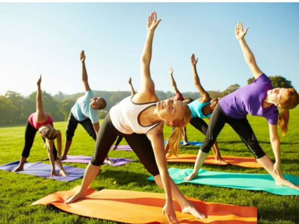

El cuerpo humano recibe casi todas las sustancias necesarias a través de los alimentos y el agua. La composición de los productos alimenticios y sus propiedades afectan directamente la salud, el desarrollo físico, la capacidad para trabajar, el estado emocional y, en general, la calidad y la esperanza de vida. Es difícil encontrar otro factor que tenga un efecto tan grave en el cuerpo humano.
Toda la vida humana tiene lugar en una forma de distribución del tiempo, en parte forzada, asociada con actividades socialmente necesarias, en parte de acuerdo con un plan individual. Entonces, por ejemplo, el régimen del día del estudiante está determinado por el plan de estudios de los estudios en la institución educativa, el régimen del soldado está determinado por la rutina diaria aprobada por el comandante de la unidad militar y el régimen de la persona que trabaja se determina en el inicio y fin de la jornada laboral.
Por lo tanto, el régimen es una rutina establecida en la vida de una persona, que incluye trabajo, comida, descanso y sueño.
El componente principal del régimen de actividad de una persona es su trabajo, que representa la actividad conveniente de una persona dirigida a crear valores materiales y espirituales.
La modalidad humana de la vida debe estar subordinada, en primer lugar, a su actividad laboral efectiva. Una persona que trabaja vive a un cierto ritmo: debe levantarse en un momento determinado, cumplir con sus deberes, comer, descansar y dormir. Y esto no es sorprendente: todos los procesos en la naturaleza están sujetos, de una forma u otra, a un ritmo riguroso: las estaciones se alternan, la noche reemplaza al día, el día reemplaza a la noche nuevamente. La actividad rítmica es una de las leyes fundamentales de la vida y una de las bases de cualquier trabajo.
Una combinación racional de elementos del estilo de vida garantiza un trabajo más productivo de una persona y un alto nivel de salud. Todo el organismo participa en la actividad laboral de una persona como un todo. El ritmo del parto establece el ritmo fisiológico: a ciertas horas, el cuerpo experimenta una carga, como resultado de lo cual aumenta el metabolismo, aumenta la circulación sanguínea y, por lo tanto, aparece una sensación de fatiga; otras horas, días en que la carga disminuye, el descanso llega después de la fatiga y la fuerza y la energía se restablecen. La correcta alternancia de carga y descanso es la base del alto rendimiento humano..
Ahora es necesario detenerse en la cuestión del descanso. El descanso es un estado de descanso o actividad vigorosa, que conduce a la restauración de la fuerza y el rendimiento.
Lo más efectivo para restaurar la salud es unas vacaciones activas, que le permiten utilizar racionalmente su tiempo libre. La alternancia de tipos de trabajo, una combinación armoniosa de trabajo mental y físico, la cultura física proporcionan una restauración efectiva de la fuerza y la energía. Una persona necesita descansar todos los días, semanalmente los fines de semana, todos los años durante las próximas vacaciones, utilizando el tiempo libre para fortalecer la salud física y espiritual.
